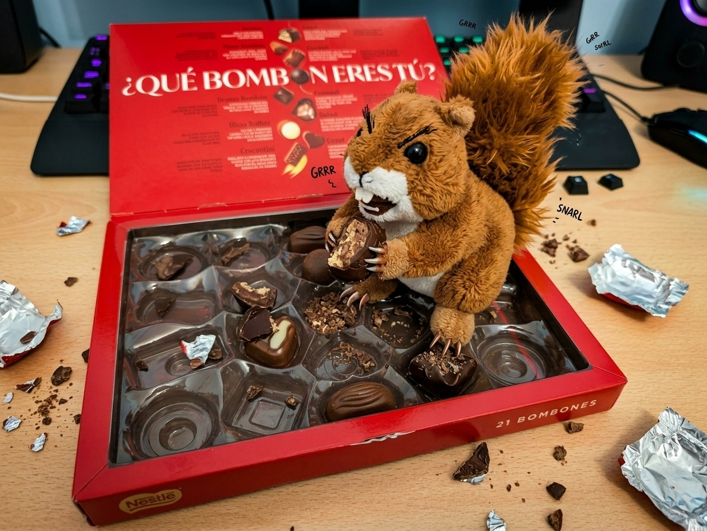

Cada vez queda menos, Cyn
No te sientas mal, también puedes verlo así...
segundos
O así:
minutos
O también...
horas
O...
días
Mientras esperas, aprovecha para leer mis respuestas:
(No hay repuestas aún)
Por cierto, tuve un pequeño problema con la ardilla...

